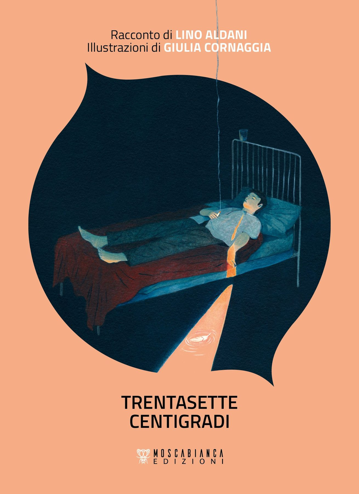
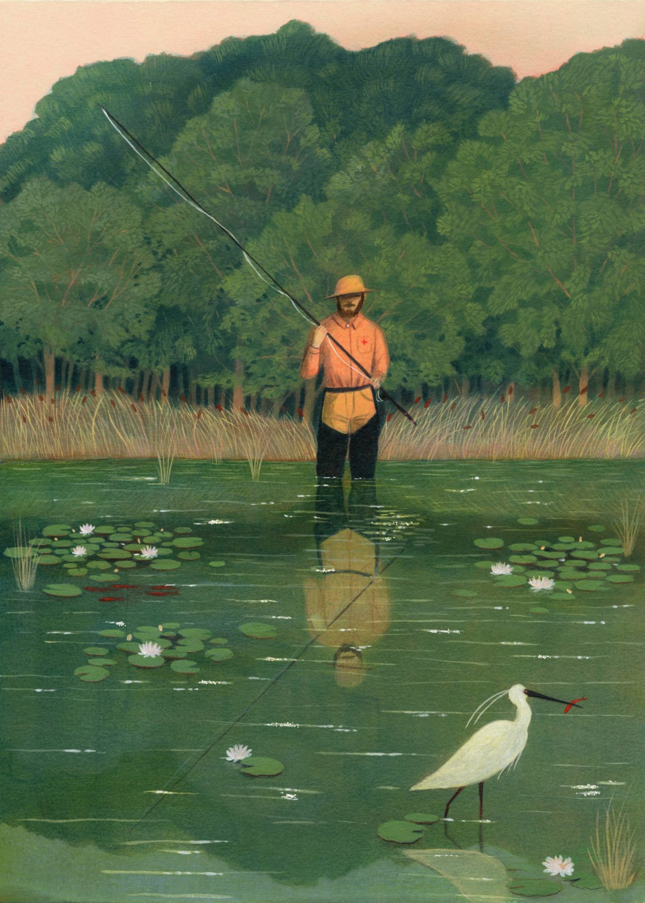
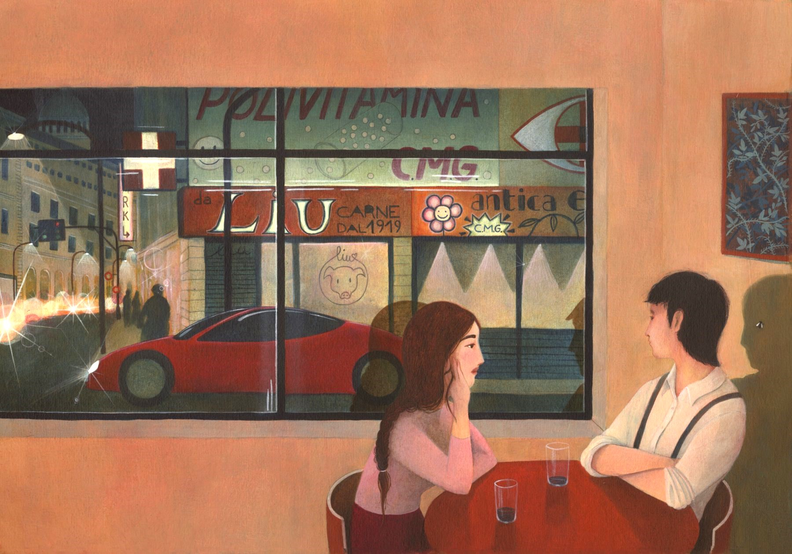
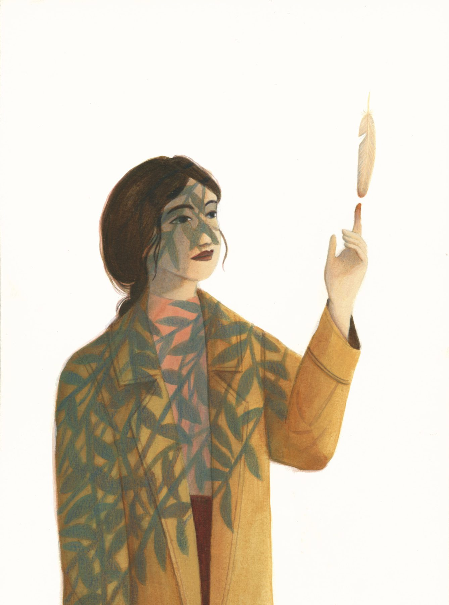
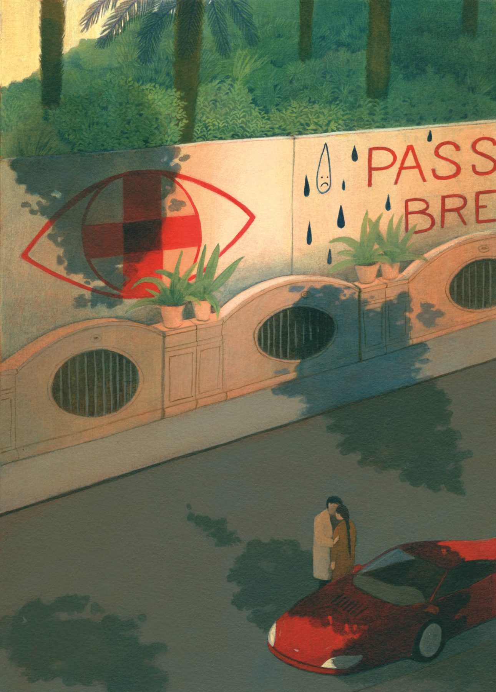

Nel mondo in cui vive Nico – una Roma del futuro – la salute è l’unico valore da preservare. Tutto il monopolio sta nelle mani della C.M.G., che tramite regole rigidissime impone alla popolazione un’esistenza sotto costante controllo medico. Ma Nico, venticinquenne, desidera solo essere libero, non aver paura di uscire tardi la sera, viaggiare, uscire con Doris.
Il maestro della fantascienza italiana Lino Aldani tratteggia una società kafkiana in questo racconto che si srotola in un paio di pomeriggi assolati, dove si insinua la cupa ombra del capitalismo. Giulia Cornaggia lo accompagna ritraendo l’assurdità distopica a cui fa da contraltare una natura che è ancora lì, in attesa di essere assaporata come libertà.




